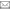

Com este serviço, a Santa Casa da Misericórdia de Leiria pretende responder ao nível da identificação e da maximização do potencial de movimento, no contexto da promoção, prevenção, tratamento e reabilitação dos seus utentes.
Com o apoio de técnicos reconhecidos pelo seu profissionalismo nesta área médica, o serviço de Fisioterapia da Misericórdia de Leiria assume-se como uma prestação de cuidados que inclui no seu processo a avaliação, o diagnóstico, o planeamento, a intervenção e a reavaliação.
Fisioterapia é o serviço prestado exclusivamente pelo fisioterapeuta e inclui avaliação, diagnóstico, planeamento, intervenção e reavaliação.
Avaliação: inclui o exame, através recolha de dados, de indivíduos ou grupos, com reais ou potenciais diminuições, limitações funcionais, incapacidades, ou outras condições de saúde, utilizando testes e medições e avaliando o resultado do exame através de análise e síntese, no contexto de um processo de raciocínio clínico.
Diagnóstico: atinge-se a partir do exame e da respectiva avaliação, representando o resultado do processo de raciocínio clínico. Pode ser expresso em termos de disfunção do movimento ou enquadrar-se em categorias de diminuições, limitações funcionais, capacidades/incapacidades ou síndromas.
Planeamento: inicia-se com a determinação da necessidade de intervenção e, de uma forma geral, conduz ao desenvolvimento de um plano de intervenção, incluindo resultados objectivos e mensuráveis, negociados em colaboração como doente /cliente, familiar ou outro prestador de cuidados. Pode, também, conduzir à referência a outros, em casos em que a fisioterapia não seja a mais apropriada.
Intervenção: é implementada e modificada de forma a serem atingidos os objectivos acordados e pode incluir manuseamento, estimulação de movimento, agentes físicos de electroterapia ou mecânicos, treino funcional, fornecimento de ajudas técnicas, ensino e aconselhamento ao doente, documentação, coordenação e comunicação.
A intervenção pode também ser dirigida numa lógica de prevenção de diminuições, limitações funcionais, incapacidades e lesões, incluindo a promoção e manutenção da saúde, da qualidade de vida e em todas as idades e populações.
Reavaliação implica que o doente seja reexaminado com o objectivo de avaliar os resultados.
Contacte-nos através do
 244 824 484
244 824 484
 geral@misericordiadeleiria.pt
 Foi um prazer enorme criar este portal para a Santa Casa.
Foi um prazer enorme criar este portal para a Santa Casa.Santa Casa da Misericórdia de Leiria
 244 106 202
244 106 202 244 106 298
244 106 298 Lar Nossa Sra. da Encarnação
244 827 400 244 823 980 Clínica Médica e de Reabilitação
244 824 484 244 823 980 Creche "Casa Sanches"
244 100 009 915 190 685 244 106 298 Residencial XXI
244 106 300 244 106 298 Hospital Dom Manuel de Aguiar
244 100 009 244 106 299244 106 203244 106 204 (24 HORAS)244 106 201Ainet © 2014 | IPLEIRIA
Website designed by Bruno Horta, Marcio Duarte and Micael Filipe.
X

 Rua Trindade Coelho, 8
Rua Trindade Coelho, 8